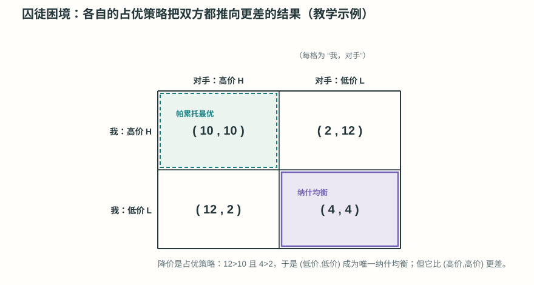
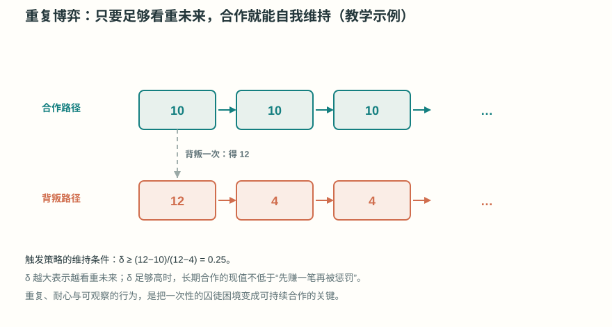

CHAPTER 18 · MICROECONOMICS
寡头垄断（下）：博弈论入门
当每个人的最优选择取决于别人怎么选，价格与数量就变成一场博弈：用收益矩阵理清囚徒困境、纳什均衡与重复合作。
算计别人的算计
上一章里，企业只是对市场或对手的产量、价格做最优反应。但真正的寡头会多想一步：我这样选，对手会怎么回应？而对手也在同样地算计我。这种互相算计的局面，需要用博弈论来分析。
一个博弈包含三要素：参与人（谁在选）、策略（各自能选什么）、收益（每种结果下各自得到多少）。本章用一个教学示例收益矩阵贯穿始终：两家企业各自选择高价或低价。
囚徒困境：占优策略的陷阱
看下面的收益矩阵（每格为“我，对手”）。无论对手选高价还是低价，我方选择低价都更划算：对手高价时 12>10，对手低价时 4>2。因此低价是占优策略 dominant strategy——不管对方怎么做，它都是我最好的选择。
双方都这样推理，均衡就落在 (低价, 低价) = (4,4)。但它比双方都维持高价的 (10,10) 更差。这就是囚徒困境 prisoner’s dilemma：每个人都追求自身最优，集体却得到次优结果。

现实中，价格战、过度捕捞、军备竞赛、碳排放都有类似的困境结构——个体理性未必带来集体理性。这也正是为什么需要规则、契约或重复交往来支撑合作。
纳什均衡与占优策略
纳什均衡 Nash equilibrium：给定对手的策略，没有人能靠单方面改变自己的策略而变得更好。图 1 中的 (低价,低价) 就是如此——给定对方选低价，我方也只能选低价。
要分清两个概念：占优策略是对手无论怎么选都最优；纳什均衡只需是对给定对手选择的最优反应。占优策略均衡一定是纳什均衡，反之未必。囚徒困境的特别之处在于：均衡同时是占优策略，却仍造成集体次优。
而且并非所有博弈都只有一个均衡。以技术标准为例：两家都采用标准 A、或都采用标准 B，都可能成为纳什均衡，这就是协调博弈 coordination game。此时需要焦点、历史经验或沟通来选出哪一个。多重均衡提醒我们：“市场会自动收敛到唯一最优”并不总成立。
重复博弈：合作如何维持
一次性的囚徒困境里，合作难以为继。但如果同样的博弈重复进行，历史行为可以被观察、也可以被报复，合作就可能自我维持。经典的触发策略 trigger strategy是：先合作；一旦对方背叛，从此永远转为惩罚（低价）。
把它算清楚。设贴现因子 δ（0<δ<1，表示对未来收益的重视程度）。一直合作的现值是等比级数 10/(1−δ)；先背叛一期、随后被惩罚的现值是 12+4δ/(1−δ)。合作能维持的条件是合作的现值不低于背叛：
当 δ ≥ 0.25 时，长期合作的现值不低于背叛，触发策略使合作成为均衡。δ 越大（越看重未来）、博弈越可能继续、行为越可观察，合作越稳固。反过来，若双方都认为合作关系即将结束（δ 很小），背叛的诱惑就会占上风。

交互实验：贴现因子
耐心与合作的存续
沿用收益矩阵：合作各得 10，先背叛得 12，此后每期 4。拖动滑块改变贴现因子 δ，比较“坚持合作”与“背叛”的现值。
贴现因子 δ=0.50：坚持合作现值=20，背叛现值=16；临界值 δ*=(12−10)/(12−4)=0.25，当前 δ≥δ*，触发策略能使合作维持。
贴现因子按百分比取值（50 表示 δ=0.50）；现值为无限期等比级数之和，不使用随机值。
若 δ 降到 0.1，合作还能维持吗？把惩罚改成“只持续一期”会怎样？
查看答案
δ=0.1 时合作现值 ≈ 11.1，低于背叛现值 ≈ 12.4，合作难以维持，一次性博弈的结果占优。若惩罚只持续一期，背叛的长期损失变小，维持合作所需的临界 δ 会更高，合作更难。
引用文献与适用范围
本章收益矩阵与数值（(10,10)、(12,2)、(4,4)，贴现因子临界值 0.25）均为教学示例，不是观测数据；博弈论概念参考以下教材：
- OpenStax · Principles of Microeconomics 3e, Ch. 8: Monopolistic Competition and Oligopoly
- OpenStax · Principles of Microeconomics 3e（教材首页）
纳什均衡、占优策略、囚徒困境与重复博弈中的触发策略均为博弈论的标准概念；本章采用简化假设（同时行动、收益稳定、惩罚可置信且永久），未引用具体企业或案例的收益数据，以免不可核验。触发策略说明重复互动“可以”支持合作，但现实中的公开协调可能触及反垄断法规。